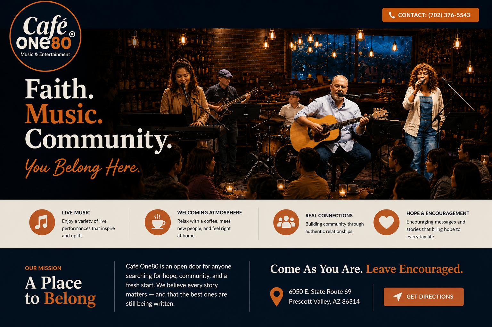

Call Café One80 Get directionsCafé One80
Faith. Music. Community. You Belong Here.
Café One80 is a place where great music, meaningful stories, and real relationships come together. Everyone is welcome.
A Place to Belong
Café One80 is an open door for anyone searching for hope, community, and a fresh start. We believe every story matters — and that the best ones are still being written.
6050 E. State Route 69, Prescott Valley, AZ 86314
Contact: (702) 376-5543